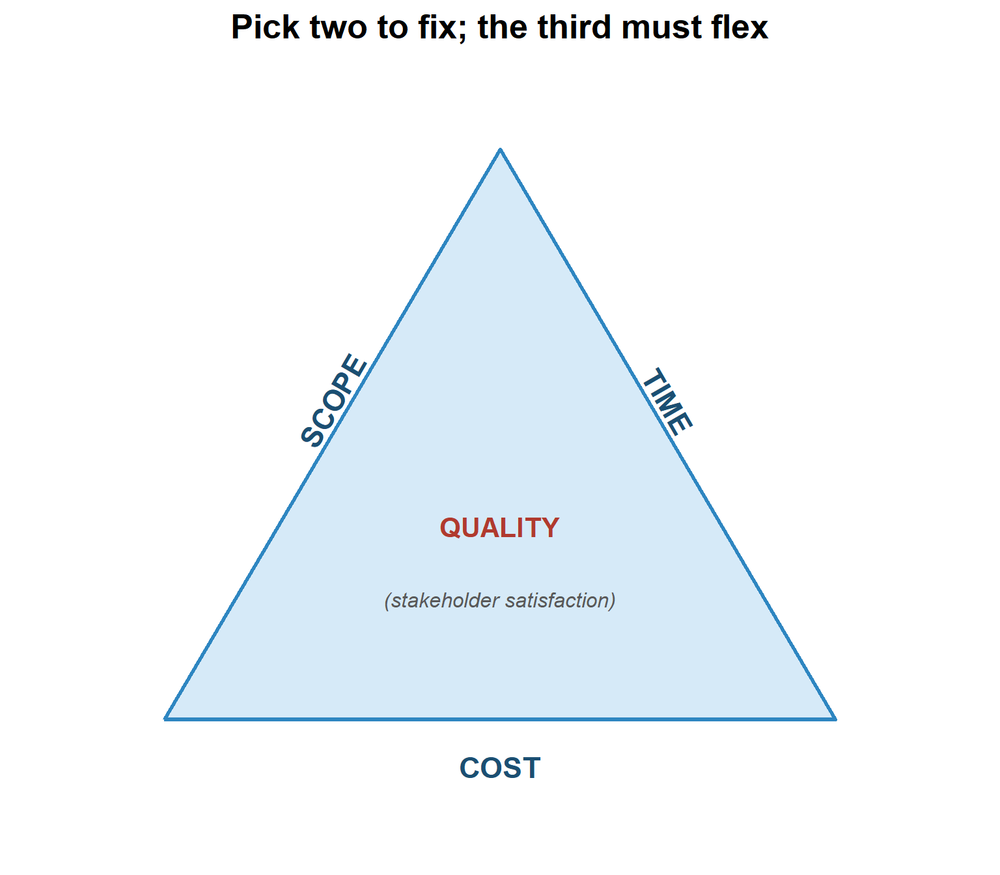
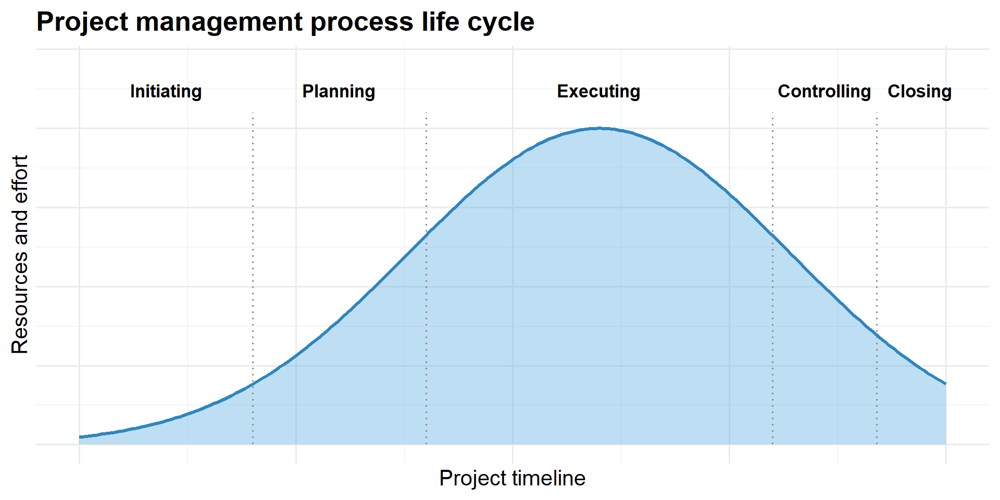
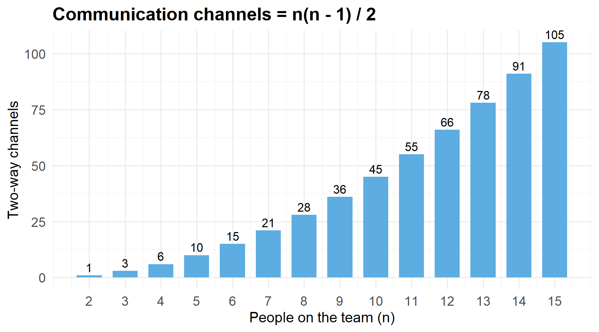

2Introduction to Project Management and Communication
2.1 Learning Objectives
By the end of this chapter you will be able to:
Distinguish a project from a process, and explain why project work needs its own discipline.
Describe the triple constraint (scope, time, cost) and its relationship to quality and resources.
Identify the five process phases of a project and what happens in each.
Apply the project manager’s decision hierarchy and name the four pillars of the PMI Code of Ethics.
Build a project communication plan and choose the right method (formal/informal, written/verbal) for a message.
Calculate the number of communication channels on a team and explain why they grow faster than headcount.
Apply active- and effective-listening techniques and recognize the listening filters that distort a message.
Select the appropriate performance report (status, progress, trend, forecast, variance, earned value) for a stakeholder need.
Before we begin: think of a group assignment that went badly
Was the problem that nobody knew what to do, or that people knew but never told each other? Most project failures are communication failures wearing a different coat. Keep that example in mind.
2.2 Introduction: only one project in four
Here is a sobering number that opens this course: by common industry estimates, only about 26 % of projects are delivered successfully while respecting the triple constraint — on scope, on time, on budget. The other three in four slip, overspend, descope, or fail outright.
That is why project management exists as a discipline. Running the RC-vehicle launch from the last chapter is not the same as running a production line. A line is a process: repetitive, permanent, tuned once and then kept stable. A project is a one-time push toward a unique goal, under a deadline and a budget, and it needs different tools and a different mindset.
Important
Case study — Orion Tech (MGMT-3105, Week 2). A software company built a healthcare app. The team was skilled, but: developers were never clear on requirements and reworked constantly; the PM ran everything through email and buried the team; stakeholders got no status reports; a few voices dominated meetings while others went silent; and tone and urgency were misread between the local team and offshore developers. Deadlines slipped, the budget grew, and the client’s satisfaction collapsed. Leadership asked whether the PM had followed any communication protocol at all.
2.3 Project versus process
Project
Process
Duration
Temporary, one-time
Permanent, ongoing
Work
Unique, complex, connected activities toward one goal
Repetitive, designed to be repeated
Ends when
The goal is met (by a specific time, within budget, to spec)
It doesn’t — it is improved and kept running
Example on our project
Designing and launching the RC-vehicle replica
Moulding 100 000 bodies once the line is running
Projects help companies cope with shortened product life cycles, narrow launch windows, increasingly complex products, and global markets. The RC-vehicle brief has all four: a holiday launch window, a technical product, and suppliers on two continents.
2.4 The triple constraint
Every project is boxed in by scope, time, and cost, with quality sitting in the middle as the measure of whether stakeholders are satisfied. Resources (people, equipment, facilities) are the fourth practical limit.
tri <-data.frame(x =c(0, 2, 4, 0),y =c(0, 3.4, 0, 0))ggplot(tri, aes(x, y)) +geom_polygon(fill ="#5DADE2", alpha =0.25, color ="#2E86C1", linewidth =1.1) +annotate("text", x =1, y =1.9, label ="SCOPE", angle =60,fontface ="bold", size =4.2* diagram_text_scale, color ="#1B4F72") +annotate("text", x =3, y =1.9, label ="TIME", angle =-60,fontface ="bold", size =4.2* diagram_text_scale, color ="#1B4F72") +annotate("text", x =2, y =-0.28, label ="COST",fontface ="bold", size =4.2* diagram_text_scale, color ="#1B4F72") +annotate("text", x =2, y =1.15, label ="QUALITY",fontface ="bold", size =4* diagram_text_scale, color ="#B03A2E") +annotate("text", x =2, y =0.72,label ="(stakeholder satisfaction)", fontface ="italic",size =3* diagram_text_scale, color ="grey35") +coord_equal(xlim =c(-0.6, 4.6), ylim =c(-0.7, 3.8)) +labs(title ="Pick two to fix; the third must flex") +theme_void() +theme(plot.title =element_text(size =14* diagram_text_scale,face ="bold", hjust =0.5))

Figure 2.1: The triple constraint. Scope, time, and cost form the sides; quality is the area they enclose. Change one side and at least one other must move, or quality suffers.
Think about it: the retailer moves the RC-vehicle launch four weeks earlier. Which constraint gives?
Time just shrank. To hold the launch you must either cut scope (fewer body options, defer a feature), add cost (overtime, expedited tooling, a second supplier), or accept lower quality (less testing) — and that last one is how projects like Orion Tech’s die. The PM’s job is to make that trade explicit and get a decision, not to quietly absorb it.
2.5 The five process phases
phase_x <-seq(0, 10, length.out =200)effort <-dnorm(phase_x, mean =6, sd =2.2)df <-data.frame(x = phase_x, effort = effort /max(effort))ggplot(df, aes(x, effort)) +geom_area(fill ="#5DADE2", alpha =0.4) +geom_line(color ="#2E86C1", linewidth =1.1) +annotate("segment", x =c(2, 4, 8, 9.2), xend =c(2, 4, 8, 9.2),y =0, yend =1.05, linetype ="dotted", color ="grey55") +annotate("text", x =c(1, 3, 6, 8.6, 9.7), y =1.12,label =c("Initiating", "Planning", "Executing", "Controlling", "Closing"),size =3.2* diagram_text_scale, fontface ="bold") +coord_cartesian(ylim =c(0, 1.2)) +labs(title ="Project management process life cycle",x ="Project timeline", y ="Resources and effort") +theme_minimal() +theme(axis.text =element_blank(),plot.title =element_text(size =14* diagram_text_scale, face ="bold"),axis.title =element_text(size =11* diagram_text_scale) )

Figure 2.2: Effort and resource use across the project life cycle. Little happens during initiation, effort peaks through execution and control, and it falls away at closing.
Phase
Key work
1. Initiating
Business case, feasibility, project sponsors, project charter + sign-off.
2. Planning
Scope statement, WBS, network diagram (AON), budget, risk plan, quality standards, control system, communication protocols. This phase decides success or failure.
3. Executing
Execute the plan, monitor progress, quality assurance. The PM shifts from doing to leading.
4. Controlling
Scope/change/schedule/budget/risk control become daily; overlaps execution.
5. Closing
Final review of budget, schedule, scope; customer sign-off; lessons learned; release resources; final payments. The hardest phase to finish well.
2.5.1 The project manager’s decision hierarchy
When decisions conflict, this is the order of consideration:
Safety (always first)
What is best for the company I represent
What is best for the project sponsor
What is best for the customer
What is best for the suppliers
And the PMI Code of Ethics rests on four pillars: responsibility, respect, fairness, and honesty. You can violate ethics without breaking a law — but as an accredited PM you would swear to uphold the code, and breaking it puts your professional standing at risk.
2.6 Project communications
Communication is not a side task. About 90 % of a project manager’s time is spent communicating. The three communication processes are plan, manage, and control.
2.6.1 The communication plan
A written communication plan is built from the stakeholders’ information needs. Typical elements:
What information is collected, and when
Who receives it
How it is gathered and stored
Limits, if any, on who may tell whom
Reporting relationships
Contact information for all stakeholders
The distribution schedule for each type of communication
Orion Tech fix: what should have been in the plan on day one?
A stakeholder list with each party’s information needs; the report types (status, cost, risk, performance) and their frequency; the mix of channels (email for the record, chat for quick updates, dashboards for tracking, video for collaboration); and feedback loops so every team member confirms they understood the requirements. None of that existed — so requirements were guessed at and stakeholders were left in the dark.
2.6.2 The communication model
Every communication has three elements: a sender, a message, and a receiver. The sender encodes the message based on the receiver’s education, experience, language, and culture, picks the right method, and confirms it was understood. The receiver decodes carefully and checks their understanding. Feedback (“Does that make sense?”, a nod, a clarifying question) closes the loop.
2.6.3 Communication channels grow faster than the team
Add one person to a team and you do not add one relationship — you add one for every person already there. The number of two-way channels on a team of \(n\) people is:
\[\text{channels} = \frac{n(n-1)}{2}\]
n <-2:15ch <- n * (n -1) /2df <-data.frame(n, ch)ggplot(df, aes(n, ch)) +geom_col(fill ="#5DADE2", width =0.7) +geom_text(aes(label = ch), vjust =-0.4, size =3.3* diagram_text_scale) +scale_x_continuous(breaks = n) +labs(title ="Communication channels = n(n - 1) / 2",x ="People on the team (n)", y ="Two-way channels") +theme_minimal() +theme(plot.title =element_text(size =14* diagram_text_scale, face ="bold"),axis.title =element_text(size =11* diagram_text_scale),axis.text =element_text(size =10* diagram_text_scale) )

Figure 2.3: Two-way communication channels versus team size. Doubling the team roughly quadruples the channels that have to be kept coherent.
2.6.4 Worked Example 1: channels on the RC-vehicle project
The core project has the PM, 4 team members, an accountant, and a sponsor liaison — 7 people. The extended stakeholder circle adds 2 supplier contacts, a retailer contact, and a compliance officer — 11 people.
core <-7extended <-11ch_core <- core * (core -1) /2ch_extended <- extended * (extended -1) /2cat("Core team channels :", ch_core, "\n")cat("Extended circle channels:", ch_extended, "\n")cat("Added by widening the circle from 7 to 11:", ch_extended - ch_core, "\n")
Core team channels : 21
Extended circle channels: 55
Added by widening the circle from 7 to 11: 34
Four extra people did not add four conversations — they added 34. That is the argument for a hub-and-spoke communication plan (routes defined, the PM as the hub) instead of letting everyone talk to everyone about everything.
2.6.5 Try it yourself: channel growth and the cost of one more stakeholder
2.7 Listening: the mode we use most and understand least
The four modes of communication, by share of a typical day and by how well they are scientifically understood:
Mode
Share
Notes
Listening
~55 %
The most used, the least studied and taught
Speaking
~23 %
Reading
~13 %
Writing
~9 %
And most of the meaning is nonverbal: roughly 93 % of person-to-person communication is carried by body language (~55 %) and tone of voice (~38 %) — and tone’s share rises toward 86 % on the phone, where body language is gone.
Active listening: the receiver signals engagement — agreeing, asking for clarification.
Effective listening: watching the speaker for gesture and expression, thinking before responding, asking questions, repeating back, giving feedback.
2.7.1 The listening filters
Every message passes through three filters before it lands:
Selective attention — we choose what to focus on.
Selective interpretation — we impose our own meaning (shaped by gender, generation, geography, culture, education, occupation).
Selective retention — we choose what to keep, and for how long.
There is also a raw arithmetic problem. People listen at about 500 words per minute but speak at about 150. That leaves ~350 words per minute of spare capacity — room to tune out.
2.7.2 Try it yourself: the tune-out budget
Listening de-railers — which one is Orion Tech’s problem?
Listening without focus — mind multitasking.
Listening without respect (impatience) — deciding the other person is wrong and interrupting.
Listening without respect (ego) — hearing only from your own perspective, not theirs.
Listening with bias (defensive / adverse) — building your rebuttal while they talk, or listening only for points to attack.
On Orion Tech it was mostly the first and last: dominant voices building responses instead of listening, quieter voices tuned out, and cross-cultural tone read through the listener’s own filter rather than the speaker’s intent.
2.8 Choosing a communication method
Written
Verbal
Formal
Complex problems, project plans, charters, long-distance — formal written
Presentations and speeches — formal verbal
Informal
Memos, emails (careful: email is also a contract), texts, notes — informal written
Meetings and conversations — informal verbal
Should a PM try to control all communication between team members and outsiders? Yes — and can they? No. The plan defines the important routes; it cannot police every hallway conversation.
2.9 Performance reporting
Different stakeholder questions need different reports:
Report
Answers
Status
Where does the project stand right now?
Progress
What has been accomplished?
Trend
Is performance improving or deteriorating over time?
Forecast
What will status and performance be in the future?
Variance
How do actual results compare to the plan?
Earned value
Integrating scope, cost, and schedule into one performance picture (see Chapter 12).
Orion Tech’s stakeholders were right to expect regular status, progress, and forecast reports — they fund and approve the project, and reports give them transparency, accountability, and early warning.
2.10 Key Takeaways
A project is temporary and unique; a process is permanent and repetitive. Only ~26 % of projects hit the full triple constraint — which is why the discipline exists.
The triple constraint is scope–time–cost, enclosing quality. Move one side and another must move, or quality pays.
Five phases: initiating, planning, executing, controlling, closing. Planning decides the outcome; closing is the hardest to finish.
Decisions are weighed safety → company → sponsor → customer → suppliers; ethics rest on responsibility, respect, fairness, honesty.
~90 % of a PM’s time is communication. Build a written communication plan from stakeholder needs, and close every loop with feedback.
Channels grow as \(n(n-1)/2\) — faster than headcount. Plan routes; don’t let everyone talk to everyone.
Listening is ~55 % of communication and the least trained; ~93 % of meaning is nonverbal. Watch for the selective attention/interpretation/retention filters and the de-railers.
Match the method (formal/informal × written/verbal) to the message, and the report (status/progress/trend/forecast/variance/EVM) to the stakeholder’s question.
2.11 Practice Problems
Problem 1: Channel count and a reorganization
The RC-vehicle project currently routes all communication through a 6-person core team. A proposal would merge in 3 supplier engineers as full team members.
How many channels before and after?
By what percentage do channels increase versus the 50 % increase in headcount?
Solution.
before <-6; after <-9ch <-function(n) n * (n -1) /2cat("Before:", ch(before), "channels\n")cat("After :", ch(after), "channels\n")cat(sprintf("Headcount up %.0f%%, channels up %.0f%%\n",100* (after / before -1),100* (ch(after) /ch(before) -1)))
Before: 15 channels
After : 36 channels
Headcount up 50%, channels up 140%
Headcount rises 50 %, channels rise 125 %. Merging them in as full members triples the coordination load of those three people; a defined liaison route would add far less.
Problem 2: Pick the method (automotive, food, defense)
Choose formal/informal and written/verbal for each:
Notifying a defense customer that a delivered lot failed an acceptance test.
A daily 10-minute stand-up with the assembly team.
The project charter for the RC-vehicle launch.
Reminding a teammate that a drawing is due Friday.
Answers. 1 — formal written (contractual weight, complex, long-distance). 2 — informal verbal (meeting). 3 — formal written (plan/charter). 4 — informal written (a text or short email; keep a light record).
Problem 3 (discussion): rebuild Orion Tech’s communication system
If you were the PM, redesign the tools, reporting, and meetings to prevent the failure.
Model answer. Write a communication plan before launch. Use a mix: email for records, Teams/Slack for quick updates, dashboards for visual tracking, video calls for collaboration (so tone and context survive the offshore gap). Run regular status meetings with an agenda and action items, and have offshore developers present their own weekly updates so no group dominates. Send stakeholders a weekly progress report (status, cost, risk). Build feedback loops: every developer confirms, in their own words, what a requirement means before coding it. Use plain language, avoid idioms, and summarize decisions in writing.